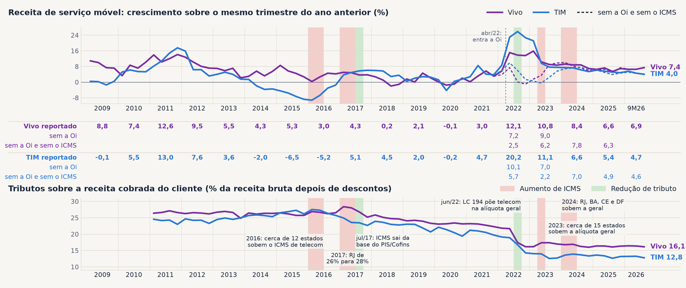
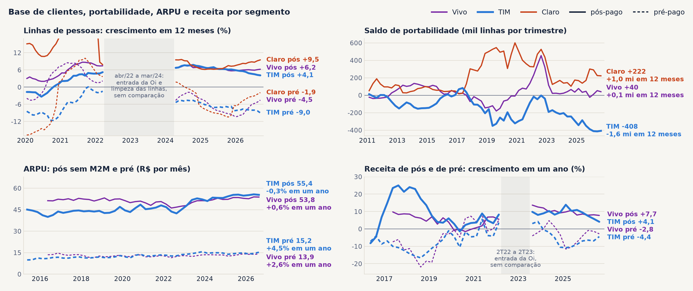
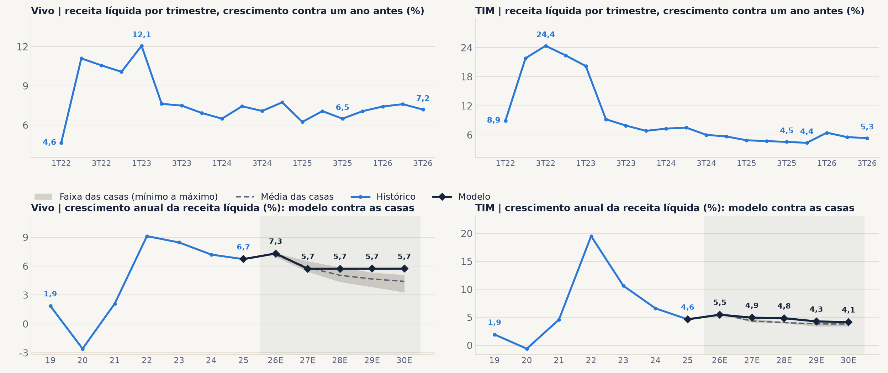
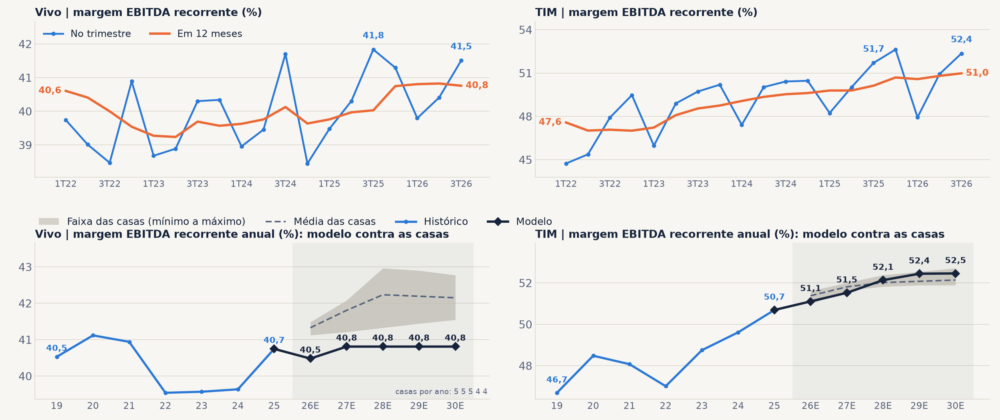
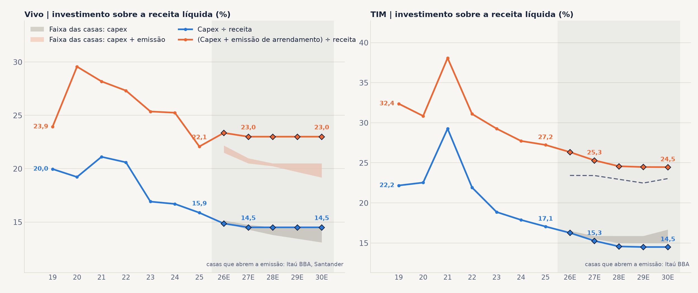
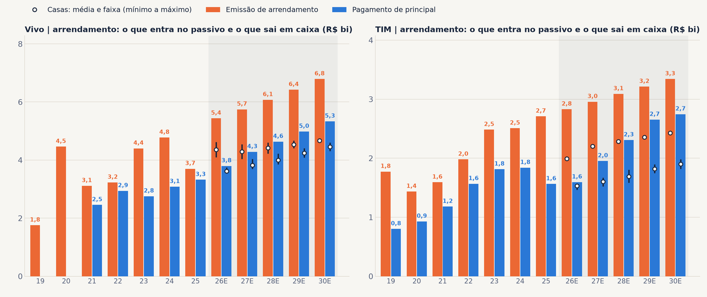
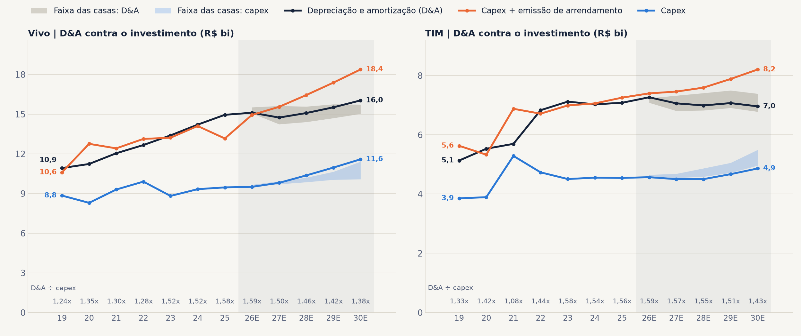
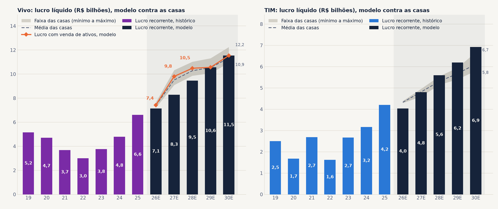
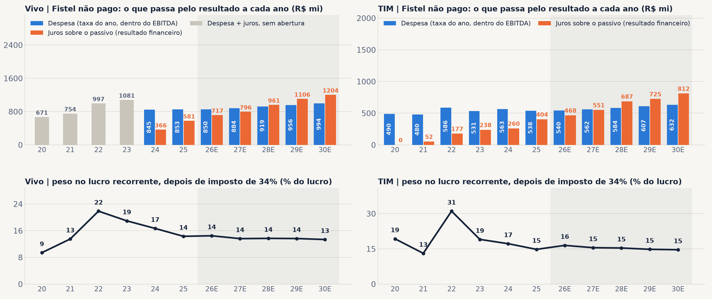

Update pós 3Q26 Petros | Rafael Lavourinha / Caio Guita
ABERTURA · O SETOR CONTRA A INFLAÇÃO E O PIB NOMINAL
Serviço móvel cresceu 4,4% ao ano desde 2009, contra IPCA de 5,7% e PIB nominal de 8,7%; superou a inflação só em 2010-12 e 2022-25 e o PIB em nenhum período
Fonte: RI das companhias, América Móvil (Claro) e releases da Oi na CVM; IBGE (IPCA, média do índice em 12 meses); Banco Central (PIB nominal em 12 meses, série 4382). Serviço móvel de Vivo, TIM, Claro e Oi somado em 12 meses, com a Oi dos dois lados em 2022.
ABERTURA · VIVO E TIM: QUANTO DO CRESCIMENTO É TRIBUTO MENOR
Tributo menor somou 1 ponto ao ano à receita líquida de Vivo e TIM de 2012 a 2025, cerca de metade pela LC 194; de 2024 em diante o ganho é quase zero

Fonte: RI de Vivo e TIM e CVM (ITR e DFP). Tributos = 1 menos a receita líquida sobre a receita bruta da DVA, já depois de descontos. Ganho = crescimento da receita líquida menos o da receita cobrada. Eventos estaduais pela compilação da Teleco; SP e RJ conferidos na lei.
ABERTURA · BASE, PORTABILIDADE, ARPU E RECEITA POR SEGMENTO
TIM perde em todas as frentes: 1,6 milhão de linhas na portabilidade em 12 meses, pré -9,0% e receita de pós de 13,9% para 4,1% em seis trimestres

Fonte: Anatel (linhas de pessoas sem M2M até set/26; portabilidade até o 3T26; Claro inclui a NuCel) e RI de Vivo e TIM (receita = ARPU vezes base média). Faixas cinza: a entrada da Oi e a limpeza das linhas impedem a comparação com um ano antes.
1 · DESACELERAÇÃO DA RECEITA LÍQUIDA
Receita: na Vivo o ritmo trimestral segue perto de 7% e a desaceleração está na estimativa (5,7% de 2027E em diante); na TIM já veio, de 24,4% para 5,3%

Fonte: planilhas de RI e modelos de Vivo e TIM de 24/11/2026. Casas: Itaú BBA, BBI, BTG, Santander e, na Vivo, UBS. O pico de 2022 e 2023 inclui os clientes da Oi e o corte de imposto.
2 · MARGEM EBITDA HOJE
Margem EBITDA em 12 meses: Vivo parada em 40,8% desde o 4T25, TIM em 51,0%; o modelo da Vivo fica abaixo de todas as casas (40,8% contra 41,2% a 42,1% em 2027E)

Fonte: planilhas de RI e modelos de 24/11/2026. EBITDA recorrente, sem venda de ativos. Casas: Itaú BBA, BBI, BTG, Santander e, na Vivo, UBS.
3 · CRESCIMENTO DO EBITDA
EBITDA cresceu 6,5% ao ano na Vivo e 10,1% na TIM de 2021 a 2025; o modelo projeta 5,7% na Vivo e 4,2% na TIM em 2030E, acima da faixa das casas
Fonte: planilhas de RI e modelos de 24/11/2026. Casas: Itaú BBA, BBI, BTG, Santander e, na Vivo, UBS. Vivo 2019: a adoção do IFRS 16 tira o aluguel do EBITDA. TIM 2022 e 2023: entrada dos clientes da Oi.
4 · CAPEX SOBRE A RECEITA, COM EMISSÃO DE ARRENDAMENTO
Capex cai para 14,5% da receita nas duas; com a emissão de arrendamento o investimento fica em 23,0% (Vivo) e 24,5% (TIM), acima das casas que abrem a linha

Fonte: planilhas de RI, DFC da CVM e modelos de 24/11/2026. Casas: Itaú BBA, BBI, BTG, Santander e, na Vivo, UBS. Só Itaú BBA e Santander (Vivo) e Itaú BBA (TIM) projetam a emissão de arrendamento.
4A · EMISSÃO DE ARRENDAMENTO × PAGAMENTO DE PRINCIPAL
A emissão de arrendamento supera o principal pago todo ano: o passivo sobe cerca de 1,5 bi por ano na Vivo e de 0,6 a 1,2 bi na TIM; o modelo emite mais que as casas

Fonte: planilhas de RI, DFC da CVM e modelos de 24/11/2026. Casas com emissão: Itaú BBA e Santander (Vivo), Itaú BBA (TIM). Com principal: Itaú BBA, BTG (até 2028E) e Santander.
4B · D&A × CAPEX
D&A é 1,6 vez o capex em 2025 e 1,4 vez em 2030E; com a emissão de arrendamento, o investimento supera a D&A desde 2025 na TIM e de 2027E na Vivo

Fonte: planilhas de RI e modelos de 24/11/2026. D&A inclui a depreciação do direito de uso (arrendamento) e a amortização de licenças. Casas: Itaú BBA, BBI, BTG, Santander e, na Vivo, UBS.
5 · LUCRO LÍQUIDO PARA FRENTE
Lucro recorrente: Vivo de 6,6 bi (2025) para 10,9 bi (2030E) e TIM de 4,2 bi para 6,5 bi; com venda de ativos, a Vivo fica dentro da faixa das casas até 2028E

Fonte: planilhas de RI e modelos de 24/11/2026. Casas: Itaú BBA, BBI, BTG, Santander e, na Vivo, UBS. O lucro das casas para a Vivo inclui o ganho com venda de ativos de 2026E a 2028E.
6 · PAYOUT DOS ÚLTIMOS ANOS × PAYOUT POTENCIAL
Payout de 2019 a 2025: Vivo pagou 107% com potencial de 134%; TIM pagou 71% com potencial de 78%. Em 2030E o modelo cai para 88% a 89%, abaixo das casas
Fonte: CVM (DFP: dividendos, JCP, recompra e redução de capital pagos sobre o lucro) e modelos de 24/11/2026. Potencial = linha Geração Caixa / LL dos modelos. Casas: Itaú BBA, BBI, BTG, Santander e, na Vivo, UBS.
7 · FISTEL: IMPACTO NO LUCRO (DESPESA E RESULTADO FINANCEIRO)
Fistel não pago equivale a 14% a 17% do lucro: em 2026E, Vivo 850 mi de despesa e 717 mi de juros; TIM 540 mi e 468 mi. Os juros passam a despesa em 2028E

Fonte: ITR/DFP e modelos. Vivo sem abertura antes de 2024. De 2027E em diante, suspensão mantida: despesa +4% a.a., juros = Selic sobre o principal. Passivo em 2027E: Itaú BBA 9,4 bi (Vivo) e 6,2 bi (TIM); BTG para em 7,7 bi e 5,4 bi.
MINHAS ESTIMATIVAS × MERCADO
Contra as casas: receita cresce mais no fim da década, margem da Vivo fica abaixo e o payout de 2030E é menor nas duas
Vivo 2027E
Vivo 2030E
TIM 2027E
TIM 2030E
modelo
casas
modelo
casas
modelo
casas
modelo
casas
Crescimento da receita líquida (%)
5,7
5,4 a 6,5
5,7
3,3 a 5,1
4,9
4,1 a 4,7
4,1
3,4 a 4,0
Margem EBITDA recorrente (%)
40,8
41,2 a 42,1
40,8
41,5 a 42,8
51,5
51,6 a 52,0
52,5
51,9 a 52,7
Crescimento do EBITDA recorrente (%)
6,6
5,7 a 7,8
5,7
3,0 a 5,3
5,8
4,5 a 6,5
4,2
3,7 a 4,1
Capex ÷ receita (%)
14,5
14,3 a 14,7
14,5
13,1 a 14,6
15,3
15,5 a 15,9
14,5
15,0 a 16,7
D&A (R$ bi)
14,7
14,2 a 15,6
16,0
15,0 a 15,7
7,1
6,8 a 7,3
7,0
6,8 a 7,4
Lucro líquido (R$ bi)
9,7
9,1 a 10,3
10,9
10,9 a 12,2
4,7
4,6 a 5,0
6,5
5,8 a 6,7
Payout (%)
88
98 a 109
89
95 a 105
103
107 a 129
88
90 a 101
Laranja: modelo abaixo da faixa das casas. Azul: acima. Cinza: dentro. Lucro da Vivo com venda de ativos, como o das casas.
Casas: Itaú BBA, BBI, BTG, Santander e, na Vivo, UBS. Faixa = mínimo a máximo das casas que publicam a linha no ano.
VALUATION
Com as mesmas premissas (Ke de 13,85% e crescimento de 6%), a TIM tem potencial de +22,5% e a Vivo de -6,0% sem Fistel; o Fistel não pago soma cerca de 7 reais por ação em cada uma
Vivo
TIM
Preço no modelo (R$)
35,42
20,94
Custo de capital próprio (Ke)
13,85%
13,85%
Crescimento na perpetuidade
6,0%
6,0%
Alvo dez/2026, sem Fistel (R$)
33,74 (-6,0%)
25,98 (+22,5%)
Alvo se 50% do Fistel for pago (R$)
37,38 (+4,1%)
29,40 (+38,5%)
Alvo se o Fistel continuar sem ser pago (R$)
41,02 (+14,3%)
32,81 (+54,6%)
Retorno implícito no preço, só com a distribuição
13,2%
15,8%
Casas: Ke de 14,2% a 17,5% e crescimento de 3,0% a 5,0%, com inflação de longo prazo de 4,0%. Na TIM, o lucro cresce 4% ao ano de 2032E a 2034E, abaixo dos 6% da perpetuidade.
Fonte: modelos de Vivo e TIM de 24/11/2026. Cenário de 50%: metade do fluxo do Fistel (despesa e juros) deixa de acumular. Vivo: o caso sem pagamento é o dobro do efeito do caso de 50%. Na TIM, 57% do efeito do Fistel vem da perpetuidade.